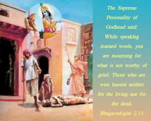

The Supreme Personality of Godhead said: While speaking learned words, you are mourning for what is not worthy of grief. Those who are wise lament neither for the living nor for the dead.

The Lord at once took the position of the teacher and chastised the student, calling him, indirectly, a fool. The Lord said, “You are talking like a learned man, but you do not know that one who is learned – one who knows what is body and what is soul – does not lament for any stage of the body, neither in the living nor in the dead condition.” As explained in later chapters, it will be clear that knowledge means to know matter and spirit and the controller of both. Arjuna argued that religious principles should be given more importance than politics or sociology, but he did not know that knowledge of matter, soul and the Supreme is even more important than religious formularies. And because he was lacking in that knowledge, he should not have posed himself as a very learned man. As he did not happen to be a very learned man, he was consequently lamenting for something which was unworthy of lamentation. The body is born and is destined to be vanquished today or tomorrow; therefore the body is not as important as the soul. One who knows this is actually learned, and for him there is no cause for lamentation, regardless of the condition of the material body.